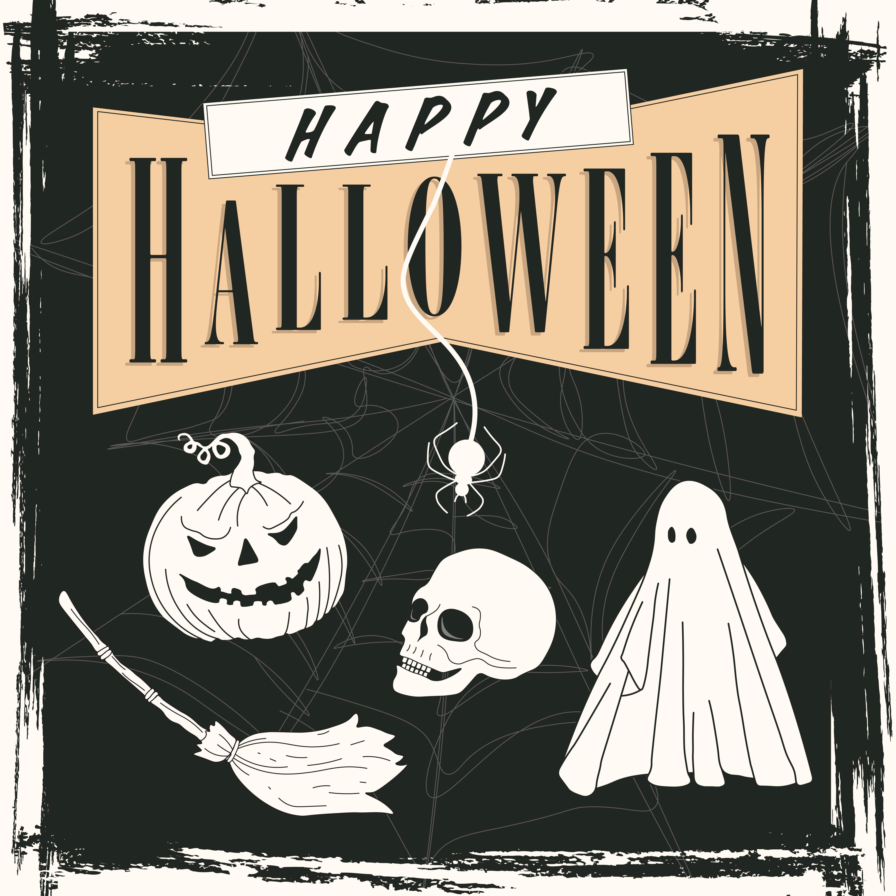
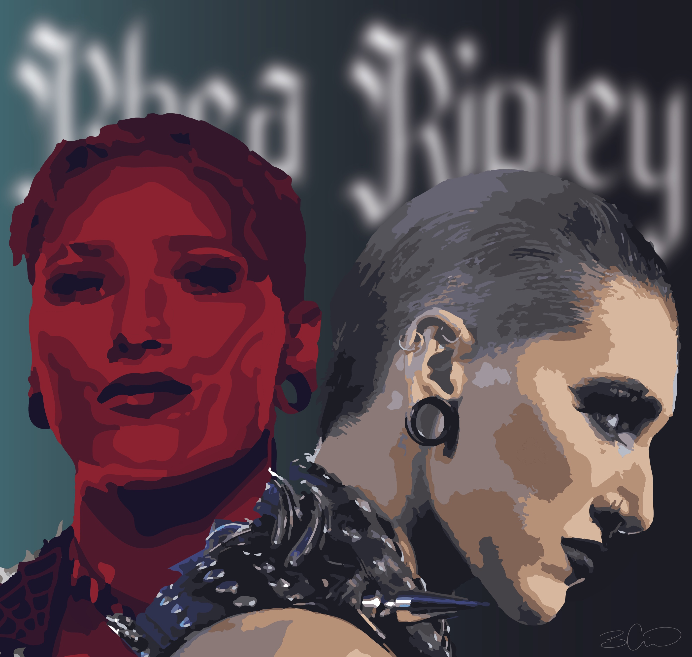
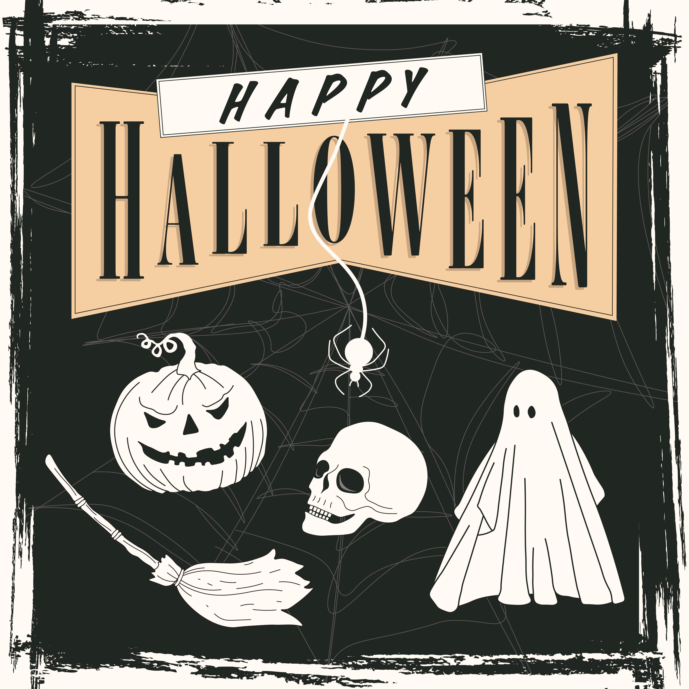
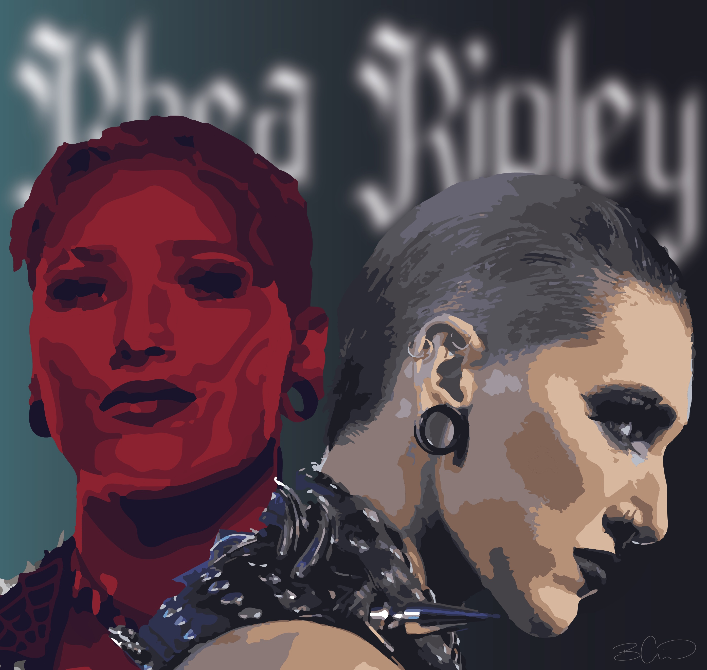
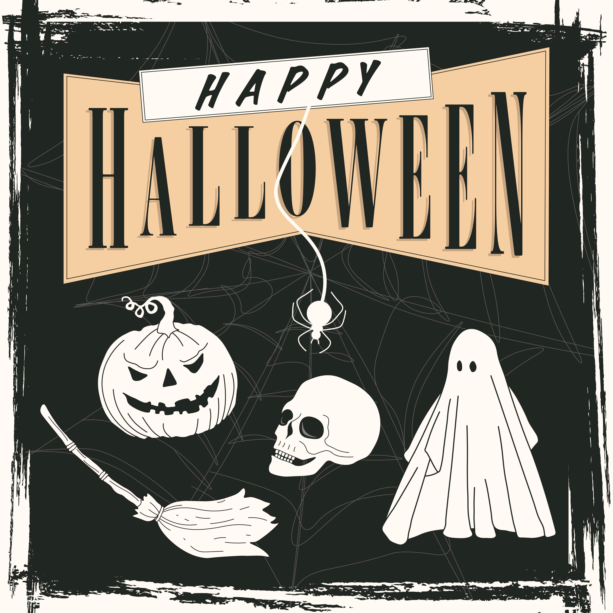
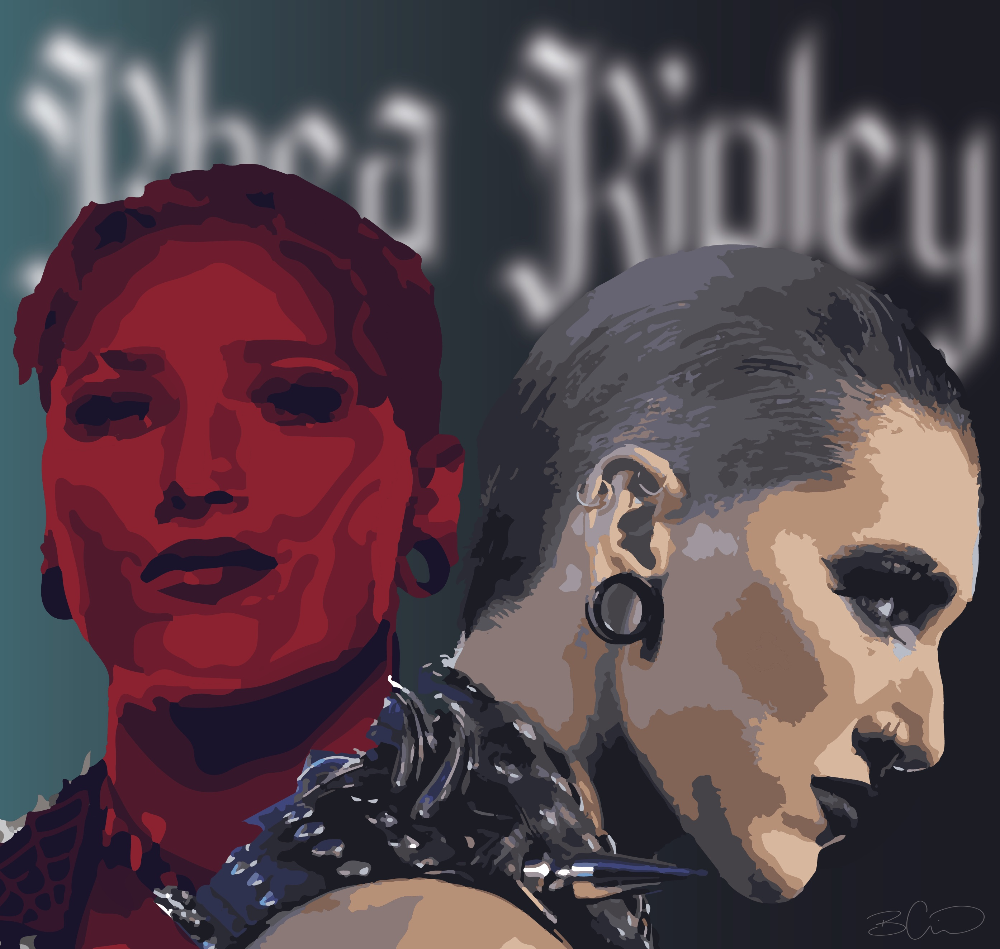
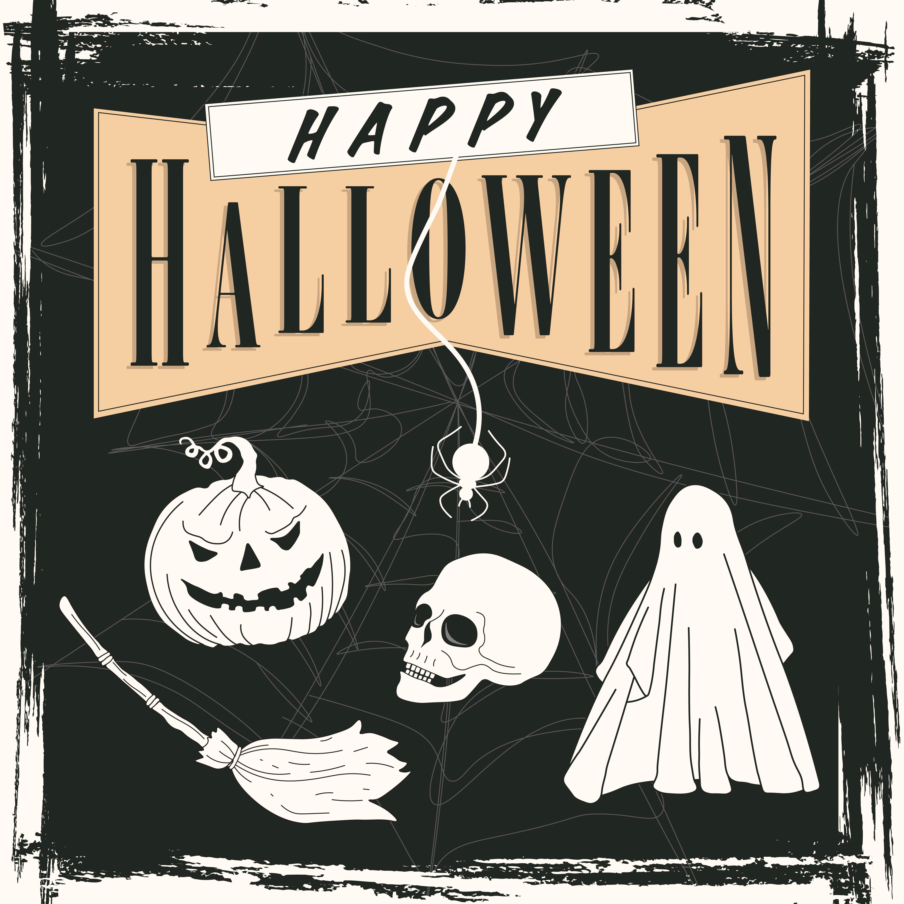
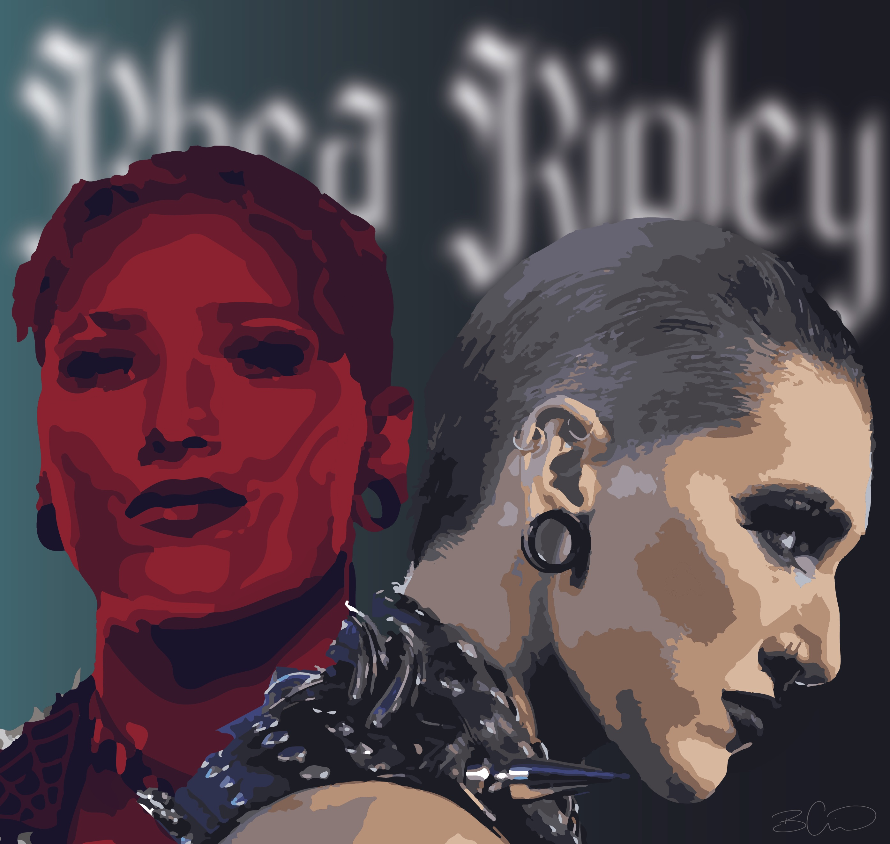

From an early age I always knew I would end up in the arts in some form, as I took a liking to all things creative in school, and procrasinated my homework by drawing. In 2021, I graduated from Carleton University with a Bachelor’s in Global Media & Communications, which has helped me understand the theoretical side of marketing and design. One of my biggest achievements has been becoming the Junior Graphic Designer for the Algonquin Student’s Association. With my experience at the SA, I’ve gained a lot of confidence in my design skills and am constantly learning from my designer collegues, improving everyday. With the combination of my post-secondary education, I aspire to merge my love for travel, continuous learning and graphic design, ultimately fulfilling my dream of moving abroad and working at a design agency.
 


